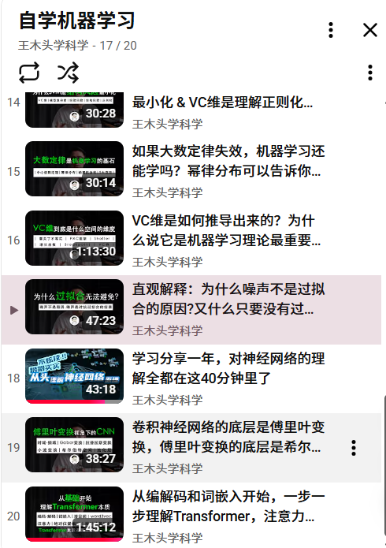
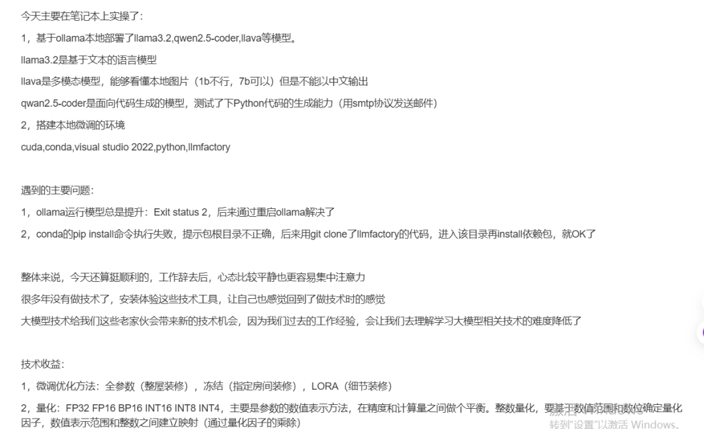

近代自然科学推动的工业革命，极大地提升了社会生产率，也促进了人类文明的进步。回首中国的现代化历程，从洋务运动的"师夷长技"，到"中学为体、西学为用"，再到市场经济体制的学习，我们一直在努力追赶西方的科技步伐。然而，时至今日，依然面临着高科技领域被"卡脖子"的困境。
当下，以大模型为代表的人工智能技术掀起了新一轮科技革命。大模型起源于神经网络技术，在这个全新赛道上，中美两国再次站到了同一起跑线。作为IT人，我深感每个人都应该对大模型的基础理论有初步了解，才能更好地驾驭这一颠覆性技术。
我的大模型学习四步法
第一步：夯实基础——神经网络理论入门
很多人看到数学公式就望而却步，其实理解神经网络并不需要高深的数学背景。我在YouTube上发现了"王木头学科学"系列课程，这位博主将神经网络涉及的数学知识讲解得深入浅出。
他从实际问题出发，逐步推导出数学公式的由来，让学习者能够直观理解每个公式背后的意义。这种从问题到解决方案的推导过程，特别适合初学者建立系统的知识框架。
第二步：论文精读——深入理解核心技术
论文是了解技术本质的最佳途径。我重点研读了两篇关键论文：
Transformer论文：我跟随李沐老师的"Transformer论文逐段精读"课程，系统学习了这一奠定大模型基石的核心架构。李沐老师逐段解析论文，让我真正理解了self-attention机制的精妙之处。
Deepseek-R论文：通过"EZ撸paper"的深度解读，我了解了DeepSeek-R1如何实现与OpenAI o1相媲美的推理能力。这种将复杂技术拆解分析的方法，极大地提升了我的理解效率。
第三步：动手实践——本地部署与模型训练
理论学习必须结合实践。我使用ollama在本地部署了1.5B参数的千问模型，并基于公开数据集，利用强化学习技术训练了一个有趣的"算命"推理模型。
这个实践项目让我深刻体会到：大模型的输出本质上是概率分布，与我们传统认知中的"确定性计算"有着根本不同。而这种"不确定性"，恰恰为创造性应用提供了广阔空间。
第四步：回归基础——图像分类实战
在探索了大模型之后，我回过头来夯实基础，从图像分类的端侧小模型入手进行实战。借助Cursor工具的辅助，我系统总结了神经网络在计算机视觉领域的应用要点。
这种从复杂到简单、再从简单到复杂的学习路径，让我对AI技术栈有了更全面的理解。

技术之外的思考：东方智慧与西方科学
在学习过程中，我不禁思考自然科学与中国传统文化的关系。
自然科学是在确定的边界条件下，通过逻辑推导获得确定的结论。而中国传统文化追求的，是在不确定的世界中寻求相对确定的应对之道。
佛家经典教导我们如何在不确定的世界中自处，唯有去除杂念才能心如明镜；道家思想告诉我们顺应宇宙规律行事，参透"反者道之动"的智慧，若逢时机，必成大器；《易经》则试图推演万事万物发展的普遍规律。
如《金刚经》所言："如来所说世界，即非世界，是名世界。"自然科学的边界条件何尝不是因缘和合的产物？缘起而生，缘尽而灭，哪有什么绝对确定的边界条件？
这当然不是要否定自然科学在特定历史时期的价值，但若放在更长的历史维度中审视，中国传统文化的智慧或许具有更持久的生命力。